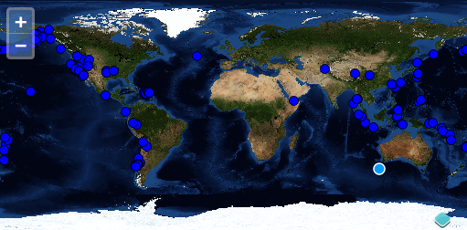

Novas geometrias podem ser desenhadas utilizando a interação ol.interaction.Draw. Esta interação é construída com uma fonte vetorial e um tipo de geometria.
Criar uma camada vetorial e uma interação Draw
Tarefas
Vamos começar com o exemplo abaixo. Abra o arquivo map.html em seu editor de texto e deixe-o assim:
<!doctype html><htmllang="en"><head><linkrel="stylesheet"href="/ol.css"type="text/css"><style>#map {
height: 256px;
width: 512px;
}
</style><scriptsrc="/loader.js"type="text/javascript"></script><title>OpenLayers example</title></head><body><h1>My Map</h1><divid="map"></div><scripttype="text/javascript">var source = new ol.source.Vector({
url: '/data/layers/7day-M2.5.json',
format: new ol.format.GeoJSON()
});
var draw = new ol.interaction.Draw({
source: source,
type: 'Point'
});
var map = new ol.Map({
interactions: ol.interaction.defaults().extend([draw]),
target: 'map',
layers: [
new ol.layer.Tile({
title: 'Global Imagery',
source: new ol.source.TileWMS({
url: 'https://ahocevar.com/geoserver/wms',
params: {LAYERS: 'nasa:bluemarble', TILED: true}
})
}),
new ol.layer.Vector({
title: 'Earthquakes',
source: source,
style: new ol.style.Style({
image: new ol.style.Circle({
radius: 5,
fill: new ol.style.Fill({
color: '#0000FF'
}),
stroke: new ol.style.Stroke({
color: '#000000'
})
})
})
})
],
view: new ol.View({
projection: 'EPSG:4326',
center: [0, 0],
zoom: 1
})
});
</script></body></html>
Salve suas alterações no arquivo map.html e abra a página em seu navegador: http://localhost:3000/map.html. Para desenhar um ponto, clique sobre o mapa e adicione uma nova feature:
Usando uma interação para adicionar geometrias para uma fonte vetorial
Tarefas de Bônus
Crie um listener para obter as coordenadas X e Y após desenhar um ponto.
Soluções
Aqui está a solução para a primeira atividade de bônus. Nós registramos um observador para o evento drawed da classe ol.interaction.Draw. Este método loga as coordenadas X e Y no console de desenvolvimento:
draw.on('drawend', function(evt){
var feature = evt.feature;
var p = feature.getGeometry();
console.log(p.getCoordinates());
});